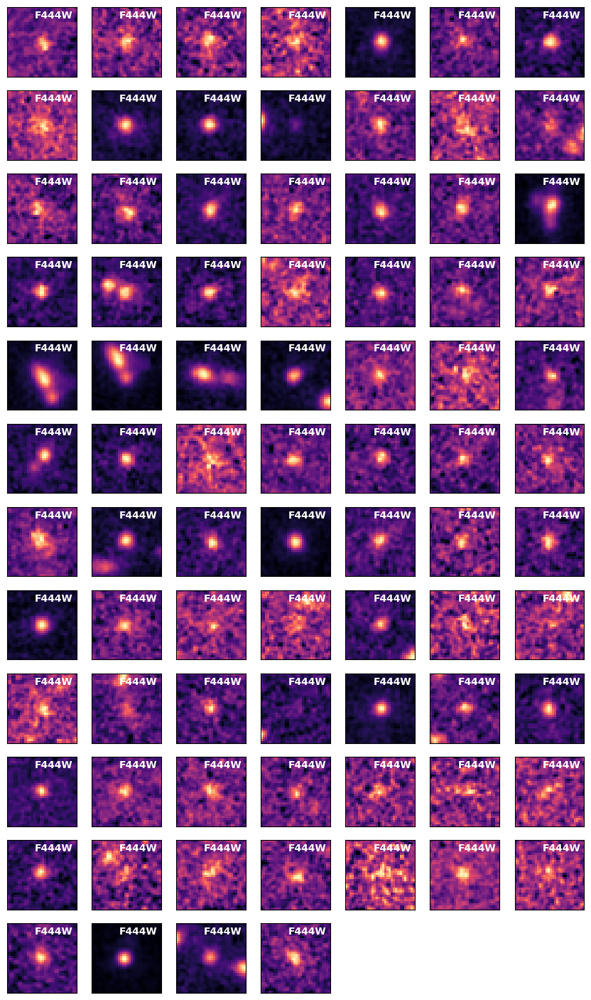

Plotting multiple cutouts from a catalogue
[1]:
# imports
import astropy.units as u
from galfind import EAZY, Catalogue, EPOCHS_Selector, Catalogue_Cutouts
from galfind.Data import morgan_version_to_dir
Reading GALFIND config file from: /nvme/scratch/work/austind/GALFIND/galfind/../configs/galfind_config.ini
WARNING:galfind:Aperture corrections for VISTA not found in /nvme/scratch/work/austind/GALFIND/galfind/Aperture_corrections/VISTA_aper_corr.txt
WARNING:galfind:Aperture corrections for VISTA not found in /nvme/scratch/work/austind/GALFIND/galfind/Aperture_corrections/VISTA_aper_corr.txt
Failed to `import dust_attenuation`
Install from the repo with $ pip install git+https://github.com/karllark/dust_attenuation.git
[ ]:
survey = "JOF"
version = "v11"
instrument_names = ["NIRCam"]
aper_diams = [0.32] * u.arcsec
forced_phot_band = ["F277W", "F356W", "F444W"]
min_flux_pc_err = 10.
SED_fit_params_arr = [
{"templates": "fsps_larson", "lowz_zmax": 4.0},
{"templates": "fsps_larson", "lowz_zmax": 6.0},
{"templates": "fsps_larson", "lowz_zmax": None}
]
JOF_cat = Catalogue.pipeline(
survey,
version,
instrument_names = instrument_names,
version_to_dir_dict = morgan_version_to_dir,
aper_diams = aper_diams,
forced_phot_band = forced_phot_band,
min_flux_pc_err = min_flux_pc_err
)
# load sextractor half-light radii
JOF_cat.load_sextractor_Re()
# load EAZY SED fitting results
for SED_fit_params in SED_fit_params_arr:
EAZY_fitter = EAZY(SED_fit_params)
EAZY_fitter(JOF_cat, aper_diams[0], load_PDFs = True, load_SEDs = True, update = True)
print(JOF_cat)
INFO:galfind:Loaded aper_diams=<Quantity [0.32] arcsec> for F277W+F356W+F444W
INFO:galfind:Combined mask for NIRCam/F277W+F356W+F444W already exists at /raid/scratch/work/austind/GALFIND_WORK/Masks/JOF/combined/JOF_F277W+F356W+F444W_auto.fits
WARNING: hdu= was not specified but multiple tables are present, reading in first available table (hdu=1) [astropy.io.fits.connect]
WARNING:astroquery:hdu= was not specified but multiple tables are present, reading in first available table (hdu=1)
WARNING:galfind:Aperture correction columns already in /raid/scratch/work/austind/GALFIND_WORK/Catalogues/v11/NIRCam/JOF/(0.32)as/JOF_MASTER_Sel-F277W+F356W+F444W_v11.fits
Calculating depths: 0%| | 0/15 [00:00<?, ?it/s]
INFO:galfind:Calculated/loaded depths for JOF v11 NIRCam
INFO:galfind:Local depth columns already exist in /raid/scratch/work/austind/GALFIND_WORK/Catalogues/v11/NIRCam/JOF/(0.32)as/JOF_MASTER_Sel-F277W+F356W+F444W_v11.fits
INFO:galfind:Loaded 'has_data_mask' from /raid/scratch/work/austind/GALFIND_WORK/Masks/JOF/has_data_mask/JOF_MASTER_Sel-F277W+F356W+F444W_v11.h5
INFO:galfind:Making JOF v11 JOF_MASTER_Sel-F277W+F356W+F444W_v11 catalogue!
WARNING:galfind:cat_aper_diams not in kwargs.keys()=dict_keys(['ZP', 'min_flux_pc_err'])! Setting to aper_diams=<Quantity [0.32] arcsec>
WARNING:galfind:cat_aper_diams not in kwargs.keys()=dict_keys(['ZP', 'min_flux_pc_err'])! Setting to aper_diams=<Quantity [0.32] arcsec>
WARNING:galfind:cat_aper_diams not in kwargs.keys()=dict_keys([])! Setting to aper_diams=<Quantity [0.32] arcsec>
INFO:galfind:Made /raid/scratch/work/austind/GALFIND_WORK/Catalogues/v11/NIRCam/JOF/(0.32)as/JOF_MASTER_Sel-F277W+F356W+F444W_v11.fits catalogue!
INFO:galfind:Loaded FLUX_RADIUS from /raid/scratch/work/austind/GALFIND_WORK/Catalogues/v11/NIRCam/JOF/(0.32)as/JOF_MASTER_Sel-F277W+F356W+F444W_v11.fits saved as sex_Re for cat_band_properties[0].keys()=dict_keys(['F090W', 'F115W', 'F150W', 'F162M', 'F182M', 'F200W', 'F210M', 'F250M', 'F277W', 'F300M', 'F335M', 'F356W', 'F410M', 'F444W'])
INFO:galfind:Making .in file for EAZY_fsps_larson_zmax=4.0 SED fitting for JOF v11 NIRCam
INFO:galfind:Made .in file for EAZY_fsps_larson_zmax=4.0 SED fitting for JOF v11 NIRCam.
Running SED fitting took 0.0s
INFO:galfind:Loading EAZY_fsps_larson property PDFs into JOF v11 NIRCam
Loading properties and associated errors took 1.6s
Constructing redshift PDFs: 100%|██████████| 16335/16335 [00:00<00:00, 42696.63it/s]
INFO:galfind:Finished loading EAZY_fsps_larson property PDFs into JOF v11 NIRCam
INFO:galfind:Loading EAZY_fsps_larson SEDs into JOF v11 NIRCam
Constructing SEDs: 100%|██████████| 16335/16335 [00:01<00:00, 13033.44it/s]
INFO:galfind:Finished loading EAZY_fsps_larson SEDs into JOF v11 NIRCam
INFO:galfind:Updating SED results in galfind catalogue object
Updating galaxy SED results: 100%|██████████| 16335/16335 [00:00<00:00, 120248.23it/s]
INFO:galfind:Making .in file for EAZY_fsps_larson_zmax=6.0 SED fitting for JOF v11 NIRCam
INFO:galfind:Made .in file for EAZY_fsps_larson_zmax=6.0 SED fitting for JOF v11 NIRCam.
Running SED fitting took 0.1s
INFO:galfind:Loading EAZY_fsps_larson property PDFs into JOF v11 NIRCam
Loading properties and associated errors took 1.0s
Constructing redshift PDFs: 100%|██████████| 16335/16335 [00:00<00:00, 21071.14it/s]
INFO:galfind:Finished loading EAZY_fsps_larson property PDFs into JOF v11 NIRCam
INFO:galfind:Loading EAZY_fsps_larson SEDs into JOF v11 NIRCam
Constructing SEDs: 100%|██████████| 16335/16335 [00:01<00:00, 14844.02it/s]
INFO:galfind:Finished loading EAZY_fsps_larson SEDs into JOF v11 NIRCam
INFO:galfind:Updating SED results in galfind catalogue object
Updating galaxy SED results: 100%|██████████| 16335/16335 [00:00<00:00, 149794.28it/s]
INFO:galfind:Making .in file for EAZY_fsps_larson_zfree SED fitting for JOF v11 NIRCam
INFO:galfind:Made .in file for EAZY_fsps_larson_zfree SED fitting for JOF v11 NIRCam.
Running SED fitting took 0.1s
INFO:galfind:Loading EAZY_fsps_larson property PDFs into JOF v11 NIRCam
Loading properties and associated errors took 1.5s
Constructing redshift PDFs: 100%|██████████| 16335/16335 [00:00<00:00, 62918.14it/s]
INFO:galfind:Finished loading EAZY_fsps_larson property PDFs into JOF v11 NIRCam
INFO:galfind:Loading EAZY_fsps_larson SEDs into JOF v11 NIRCam
[ ]:
# perform EPOCHS selection
epochs_selector = EPOCHS_Selector(allow_lowz = False, unmasked_instruments = "NIRCam")
EPOCHS_JOF_cat = epochs_selector(JOF_cat, aper_diams[0], EAZY_fitter, return_copy = True)
Selecting bluewards_Lya_SNR<2.0_EAZY_fsps_larson_zfree_0.32as: 100%|██████████| 16335/16335 [00:00<00:00, 103847.73it/s]
WARNING:galfind:property_name='bluewards_Lya_SNR<2.0_EAZY_fsps_larson_zfree_0.32as' already appended to hdu='SELECTION' .fits table, not overwriting!
Selecting redwards_Lya_SNR>5.0,5.0_widebands_EAZY_fsps_larson_zfree_0.32as: 100%|██████████| 16335/16335 [00:00<00:00, 39871.18it/s]
WARNING:galfind:property_name='redwards_Lya_SNR>5.0,5.0_widebands_EAZY_fsps_larson_zfree_0.32as' already appended to hdu='SELECTION' .fits table, not overwriting!
Selecting ALL_redwards_Lya_SNR>2.0_EAZY_fsps_larson_zfree_0.32as: 100%|██████████| 16335/16335 [00:00<00:00, 117714.70it/s]
WARNING:galfind:property_name='ALL_redwards_Lya_SNR>2.0_EAZY_fsps_larson_zfree_0.32as' already appended to hdu='SELECTION' .fits table, not overwriting!
Selecting red_chi_sq<3.0_EAZY_fsps_larson_zfree_0.32as: 100%|██████████| 16335/16335 [00:00<00:00, 119269.00it/s]
WARNING:galfind:property_name='red_chi_sq<3.0_EAZY_fsps_larson_zfree_0.32as' already appended to hdu='SELECTION' .fits table, not overwriting!
Selecting chi_sq_diff>4.0,dz>0.5_EAZY_fsps_larson_zfree_0.32as: 100%|██████████| 16335/16335 [00:00<00:00, 100785.31it/s]
WARNING:galfind:property_name='chi_sq_diff>4.0,dz>0.5_EAZY_fsps_larson_zfree_0.32as' already appended to hdu='SELECTION' .fits table, not overwriting!
Selecting zPDF>60%,|dz|/z<0.1_EAZY_fsps_larson_zfree_0.32as: 100%|██████████| 16335/16335 [00:00<00:00, 94003.34it/s]
WARNING:galfind:property_name='zPDF>60%,|dz|/z<0.1_EAZY_fsps_larson_zfree_0.32as' already appended to hdu='SELECTION' .fits table, not overwriting!
Selecting unmasked_F090W: 100%|██████████| 16335/16335 [00:00<00:00, 463238.87it/s]
WARNING:galfind:property_name='unmasked_F090W' already appended to hdu='SELECTION' .fits table, not overwriting!
Selecting unmasked_F115W: 100%|██████████| 16335/16335 [00:00<00:00, 271025.76it/s]
WARNING:galfind:property_name='unmasked_F115W' already appended to hdu='SELECTION' .fits table, not overwriting!
Selecting unmasked_F150W: 100%|██████████| 16335/16335 [00:00<00:00, 514079.58it/s]
WARNING:galfind:property_name='unmasked_F150W' already appended to hdu='SELECTION' .fits table, not overwriting!
Selecting unmasked_F162M: 100%|██████████| 16335/16335 [00:00<00:00, 514125.87it/s]
WARNING:galfind:property_name='unmasked_F162M' already appended to hdu='SELECTION' .fits table, not overwriting!
Selecting unmasked_F182M: 100%|██████████| 16335/16335 [00:00<00:00, 451189.03it/s]
WARNING:galfind:property_name='unmasked_F182M' already appended to hdu='SELECTION' .fits table, not overwriting!
Selecting unmasked_F200W: 100%|██████████| 16335/16335 [00:00<00:00, 501834.48it/s]
WARNING:galfind:property_name='unmasked_F200W' already appended to hdu='SELECTION' .fits table, not overwriting!
Selecting unmasked_F210M: 100%|██████████| 16335/16335 [00:00<00:00, 513378.51it/s]
WARNING:galfind:property_name='unmasked_F210M' already appended to hdu='SELECTION' .fits table, not overwriting!
Selecting unmasked_F250M: 100%|██████████| 16335/16335 [00:00<00:00, 513547.82it/s]
WARNING:galfind:property_name='unmasked_F250M' already appended to hdu='SELECTION' .fits table, not overwriting!
Selecting unmasked_F277W: 100%|██████████| 16335/16335 [00:00<00:00, 463709.16it/s]
WARNING:galfind:property_name='unmasked_F277W' already appended to hdu='SELECTION' .fits table, not overwriting!
Selecting unmasked_F300M: 100%|██████████| 16335/16335 [00:00<00:00, 316012.12it/s]
WARNING:galfind:property_name='unmasked_F300M' already appended to hdu='SELECTION' .fits table, not overwriting!
Selecting unmasked_F335M: 100%|██████████| 16335/16335 [00:00<00:00, 391030.15it/s]
WARNING:galfind:property_name='unmasked_F335M' already appended to hdu='SELECTION' .fits table, not overwriting!
Selecting unmasked_F356W: 100%|██████████| 16335/16335 [00:00<00:00, 518687.54it/s]
WARNING:galfind:property_name='unmasked_F356W' already appended to hdu='SELECTION' .fits table, not overwriting!
Selecting unmasked_F410M: 100%|██████████| 16335/16335 [00:00<00:00, 521776.54it/s]
WARNING:galfind:property_name='unmasked_F410M' already appended to hdu='SELECTION' .fits table, not overwriting!
Selecting unmasked_F444W: 100%|██████████| 16335/16335 [00:00<00:00, 511871.17it/s]
WARNING:galfind:property_name='unmasked_F444W' already appended to hdu='SELECTION' .fits table, not overwriting!
Selecting unmasked_NIRCam: 100%|██████████| 16335/16335 [00:00<00:00, 493694.65it/s]
WARNING:galfind:property_name='unmasked_NIRCam' already appended to hdu='SELECTION' .fits table, not overwriting!
Selecting bluest_band_SNR<2.0_0.32as: 100%|██████████| 16335/16335 [00:00<00:00, 96272.09it/s]
WARNING:galfind:property_name='bluest_band_SNR<2.0_0.32as' already appended to hdu='SELECTION' .fits table, not overwriting!
Selecting sex_Re_F277W>45.0mas: 100%|██████████| 16335/16335 [00:00<00:00, 108278.81it/s]
WARNING:galfind:property_name='sex_Re_F277W>45.0mas' already appended to hdu='SELECTION' .fits table, not overwriting!
Selecting sex_Re_F356W>45.0mas: 100%|██████████| 16335/16335 [00:00<00:00, 114075.66it/s]
WARNING:galfind:property_name='sex_Re_F356W>45.0mas' already appended to hdu='SELECTION' .fits table, not overwriting!
Selecting sex_Re_F444W>45.0mas: 100%|██████████| 16335/16335 [00:00<00:00, 123555.21it/s]
WARNING:galfind:property_name='sex_Re_F444W>45.0mas' already appended to hdu='SELECTION' .fits table, not overwriting!
Selecting sex_Re_F277W+F356W+F444W>45.0mas: 100%|██████████| 16335/16335 [00:00<00:00, 524987.02it/s]
WARNING:galfind:property_name='sex_Re_F277W+F356W+F444W>45.0mas' already appended to hdu='SELECTION' .fits table, not overwriting!
Selecting EPOCHS_NIRCam_EAZY_fsps_larson_zfree_0.32as: 100%|██████████| 16335/16335 [00:00<00:00, 127838.14it/s]
WARNING:galfind:property_name='EPOCHS_NIRCam_EAZY_fsps_larson_zfree_0.32as' already appended to hdu='SELECTION' .fits table, not overwriting!
Example 1: Plotting a catalogue of cutouts in a single band
[ ]:
f444w_cat_cutouts = Catalogue_Cutouts.from_cat_filt(EPOCHS_JOF_cat, "F444W", 0.96 * u.arcsec, overwrite = False)
print(f444w_cat_cutouts)
INFO:galfind:Already made fits cutout for JOF v11 288 F444W
INFO:galfind:Already made fits cutout for JOF v11 568 F444W
INFO:galfind:Already made fits cutout for JOF v11 710 F444W
INFO:galfind:Already made fits cutout for JOF v11 718 F444W
INFO:galfind:Already made fits cutout for JOF v11 885 F444W
INFO:galfind:Already made fits cutout for JOF v11 946 F444W
INFO:galfind:Already made fits cutout for JOF v11 1669 F444W
INFO:galfind:Already made fits cutout for JOF v11 1676 F444W
INFO:galfind:Already made fits cutout for JOF v11 2162 F444W
INFO:galfind:Already made fits cutout for JOF v11 2248 F444W
INFO:galfind:Already made fits cutout for JOF v11 2799 F444W
INFO:galfind:Already made fits cutout for JOF v11 2839 F444W
INFO:galfind:Already made fits cutout for JOF v11 2875 F444W
INFO:galfind:Already made fits cutout for JOF v11 3004 F444W
INFO:galfind:Already made fits cutout for JOF v11 3219 F444W
INFO:galfind:Already made fits cutout for JOF v11 3397 F444W
INFO:galfind:Already made fits cutout for JOF v11 3642 F444W
INFO:galfind:Already made fits cutout for JOF v11 3830 F444W
INFO:galfind:Already made fits cutout for JOF v11 3898 F444W
INFO:galfind:Already made fits cutout for JOF v11 4023 F444W
INFO:galfind:Already made fits cutout for JOF v11 4047 F444W
INFO:galfind:Already made fits cutout for JOF v11 4087 F444W
INFO:galfind:Already made fits cutout for JOF v11 4094 F444W
INFO:galfind:Already made fits cutout for JOF v11 4134 F444W
INFO:galfind:Already made fits cutout for JOF v11 4270 F444W
INFO:galfind:Already made fits cutout for JOF v11 4276 F444W
INFO:galfind:Already made fits cutout for JOF v11 4305 F444W
INFO:galfind:Already made fits cutout for JOF v11 4805 F444W
INFO:galfind:Already made fits cutout for JOF v11 5376 F444W
INFO:galfind:Already made fits cutout for JOF v11 5553 F444W
INFO:galfind:Already made fits cutout for JOF v11 5625 F444W
INFO:galfind:Already made fits cutout for JOF v11 5687 F444W
INFO:galfind:Already made fits cutout for JOF v11 5797 F444W
INFO:galfind:Already made fits cutout for JOF v11 5798 F444W
INFO:galfind:Already made fits cutout for JOF v11 5988 F444W
INFO:galfind:Already made fits cutout for JOF v11 6161 F444W
INFO:galfind:Already made fits cutout for JOF v11 6176 F444W
INFO:galfind:Already made fits cutout for JOF v11 6491 F444W
INFO:galfind:Already made fits cutout for JOF v11 6508 F444W
INFO:galfind:Already made fits cutout for JOF v11 6775 F444W
INFO:galfind:Already made fits cutout for JOF v11 6813 F444W
INFO:galfind:Already made fits cutout for JOF v11 6888 F444W
INFO:galfind:Already made fits cutout for JOF v11 6979 F444W
INFO:galfind:Already made fits cutout for JOF v11 7412 F444W
INFO:galfind:Already made fits cutout for JOF v11 7555 F444W
INFO:galfind:Already made fits cutout for JOF v11 7917 F444W
INFO:galfind:Already made fits cutout for JOF v11 8822 F444W
INFO:galfind:Already made fits cutout for JOF v11 8915 F444W
INFO:galfind:Already made fits cutout for JOF v11 9005 F444W
INFO:galfind:Already made fits cutout for JOF v11 9064 F444W
INFO:galfind:Already made fits cutout for JOF v11 9143 F444W
INFO:galfind:Already made fits cutout for JOF v11 9571 F444W
INFO:galfind:Already made fits cutout for JOF v11 9687 F444W
INFO:galfind:Already made fits cutout for JOF v11 9971 F444W
INFO:galfind:Already made fits cutout for JOF v11 10098 F444W
INFO:galfind:Already made fits cutout for JOF v11 10572 F444W
INFO:galfind:Already made fits cutout for JOF v11 10578 F444W
INFO:galfind:Already made fits cutout for JOF v11 10757 F444W
INFO:galfind:Already made fits cutout for JOF v11 11106 F444W
INFO:galfind:Already made fits cutout for JOF v11 11141 F444W
INFO:galfind:Already made fits cutout for JOF v11 11188 F444W
INFO:galfind:Already made fits cutout for JOF v11 11194 F444W
INFO:galfind:Already made fits cutout for JOF v11 11333 F444W
INFO:galfind:Already made fits cutout for JOF v11 11424 F444W
INFO:galfind:Already made fits cutout for JOF v11 11471 F444W
INFO:galfind:Already made fits cutout for JOF v11 11939 F444W
INFO:galfind:Already made fits cutout for JOF v11 12086 F444W
INFO:galfind:Already made fits cutout for JOF v11 12395 F444W
INFO:galfind:Already made fits cutout for JOF v11 12751 F444W
INFO:galfind:Already made fits cutout for JOF v11 13546 F444W
INFO:galfind:Already made fits cutout for JOF v11 13679 F444W
INFO:galfind:Already made fits cutout for JOF v11 13713 F444W
INFO:galfind:Already made fits cutout for JOF v11 14210 F444W
INFO:galfind:Already made fits cutout for JOF v11 14266 F444W
INFO:galfind:Already made fits cutout for JOF v11 14477 F444W
INFO:galfind:Already made fits cutout for JOF v11 14765 F444W
INFO:galfind:Already made fits cutout for JOF v11 14973 F444W
INFO:galfind:Already made fits cutout for JOF v11 15316 F444W
INFO:galfind:Already made fits cutout for JOF v11 15360 F444W
INFO:galfind:Already made fits cutout for JOF v11 15521 F444W
INFO:galfind:Already made fits cutout for JOF v11 15874 F444W
<galfind.Cutout.Catalogue_Cutouts object at 0x7fd92018d310>
[ ]:
f444w_cat_cutouts.plot()
